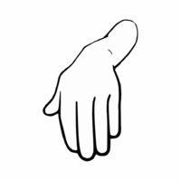
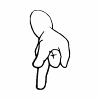

<!--
    Porject: Rock Paper Scissors
    By: Mirzokhid Ganiev
    Age: 15
    Grade: 10 G
    Date upon finishing: Sunday 27th September 2020 (27/09/2020)
    Location: Dubai, UAE
-->
<!DOCTYPE html>
<hmtl>
    <meta name="viewport" content="width=device-width, initial-scale=1.0">
    <link rel="stylesheet" href="style.css">
    <head><title>Rock Paper Scissors</title></head>
    <body>
        
        
        
        <p id="random"></p>
        <p class="scorePlayer">Player Score:<p id="scorePlayer"></p></p>
        <p class="scoreComputer">Computer Score:<p id="scoreComputer"></p></p>
        <p id="result"></p>
        <p id="overallResult"></p>
        <h4>Whoever reaches five scores wins</h4>
        <h5>Disclaimers: <br>*The computer outputs random hands. <br>*In some cases you can get constant draws, continues loses or continues wins for certain plays<br>*After the winner is announced restart the site to start a new game</h5>
        <script src="java.js"></script>
    </body>
</hmtl>